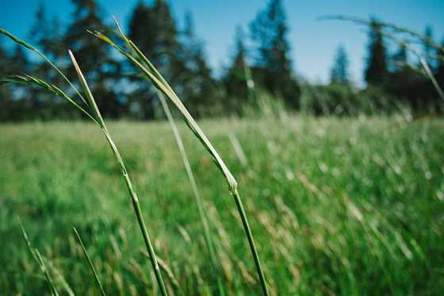
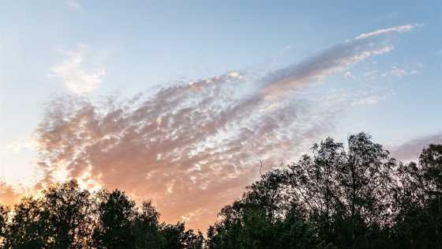
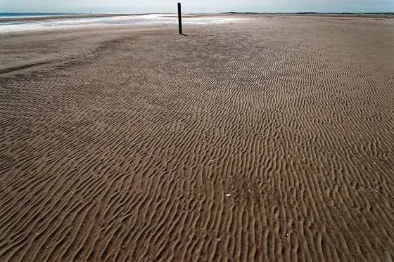
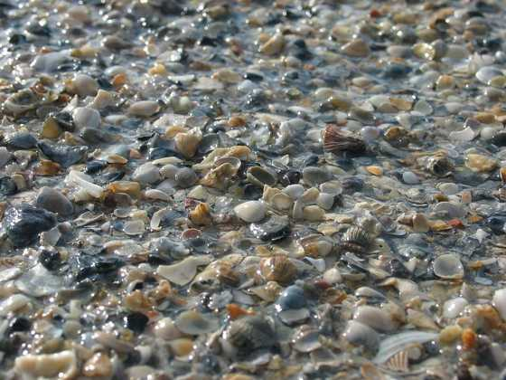
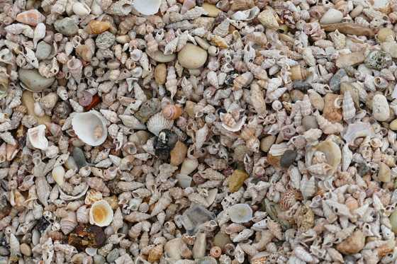

cafe SLOW
急がない一杯で、ゆったりとした時間を。
栃木県さくら市氏家・JR氏家駅そばのカフェ
ABOUT
ゆったり過ごせるカフェとして、
2026年6月に開店。
cafe SLOWは、さくら市氏家のeプラザ参番館にある、2026年6月11日開店のカフェです。さくら市の紹介ページでは「ゆったりとした時間を過ごせるカフェ」とされ、手で淹れる珈琲と、素材にこだわった料理・自家製スイーツが紹介されています。
店内にはカウンター・テーブル・テラス席があり、テラス席は犬連れも可とのことです(Instagramプロフィールより)。
情報源: さくら市(eプラザ参番館) / Instagram / 食べログ
店名「SLOW」に込められた意味やオーナー様の想いは確認できていないため、載せていません。「急がない一杯」というコンセプト表現は、「ゆったりとした時間」という紹介文をもとにした制作側のイメージです。




MENU
手で淹れる珈琲と、玉子・自家製の味わい。
さくら市の紹介ページで挙げられているメニューです。内容や価格は変わることがあります。
価格・営業時間・定休日: 準備中(営業時間は情報源により異なるため掲載していません。最新情報はInstagramをご覧ください)




VOICE
口コミ イメージ例
以下は制作側が作成したイメージ例で、実在のお客様の声ではありません。
イメージ例駅のそばなのに、店に入るとゆっくり時間が流れる感じがして、ついのんびりしてしまいました。
イメージ例ていねいに淹れてもらった珈琲と甘いもので、仕事帰りにひと息つけました。
イメージ例テラス席でのんびり過ごせるのがうれしいです。また来たいと思います。

